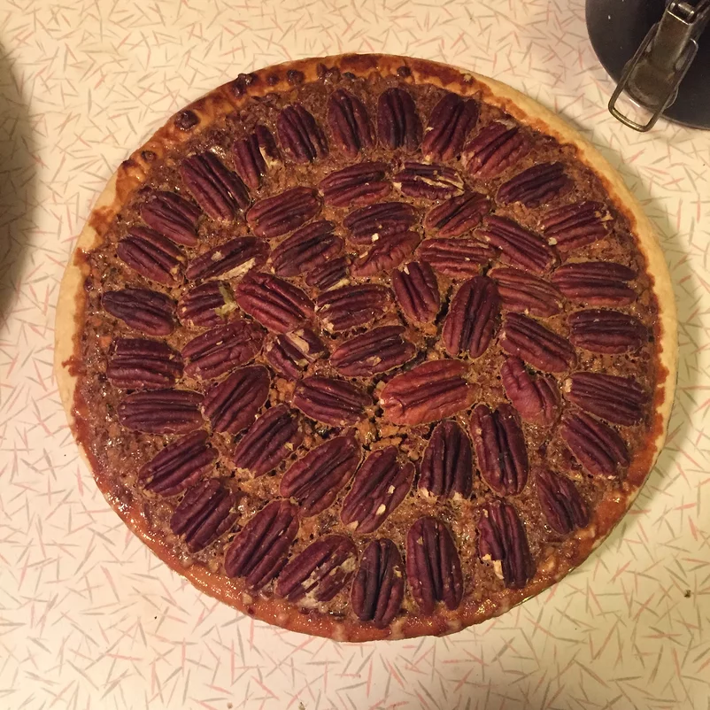

Pecan Pie

Description
The following is a recipe for delicious Pecan Pie. Kinda Nutty!
- 1 ¾ cups white sugar
- ¼ cup dark corn syrup
- ¼ cup butter
- 1 tablespoon cold water
- 2 teaspoons cornstarch
- 3 eggs
- ¼ teaspoon salt
- 1 teaspoon vanilla extract
- 1 ¼ cups chopped pecans
- 1 (9 inch) unbaked pie shell
Steps
- Preheat oven to 350 degrees F (175 degrees C).
- In a medium saucepan, combine the sugar, corn syrup, butter, water, and cornstarch. Bring to a full boil, and remove from heat.
- In a large bowl, beat eggs until frothy. Gradually beat in cooked syrup mixture. Stir in salt, vanilla, and pecans. Pour into pie shell.
- Bake in preheated oven for 45 to 50 minutes, or until filling is set.